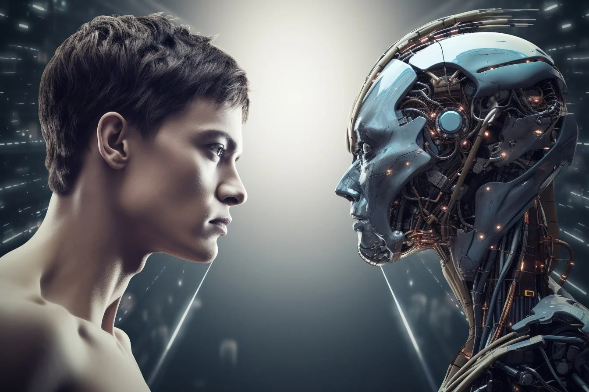

Human vs. AI
In the ever-evolving landscape of technology, the debate between human intelligence and artificial intelligence (AI) has become increasingly prominent. While some view AI as a threat to human jobs and creativity, others see it as a powerful tool that can enhance our capabilities and improve our lives. This blog explores the dynamic interplay between human and AI, highlighting the strengths and limitations of both, and envisioning a future where they coexist harmoniously.

You can Access the Diff. between Human AI
Advantages and Disadvantages of AI
Advantages:-
- Enhanced Productivity and Efficiency
- Improved Decision-Making
- Reduced Human Error and Increased Accuracy
- New Opportunities and Innovation
- New Opportunities and Innovation
Disadvantages:-
- Job Displacement and Economic Disruption
- Ethical and Societal Concerns
- Security Risks
- Autonomous Weapons
- Dependence and Decline in Human Skills
AI lacks true intuition, gut feeling, and “human touch” in decision-making. Humans possess intuition, gut feeling, and the ability to make decisions based on hunches and emotions. AI lacks self-awareness and personal consciousness. Humans have self-awareness and can introspect on their thoughts and actions.
THANK YOU..!!